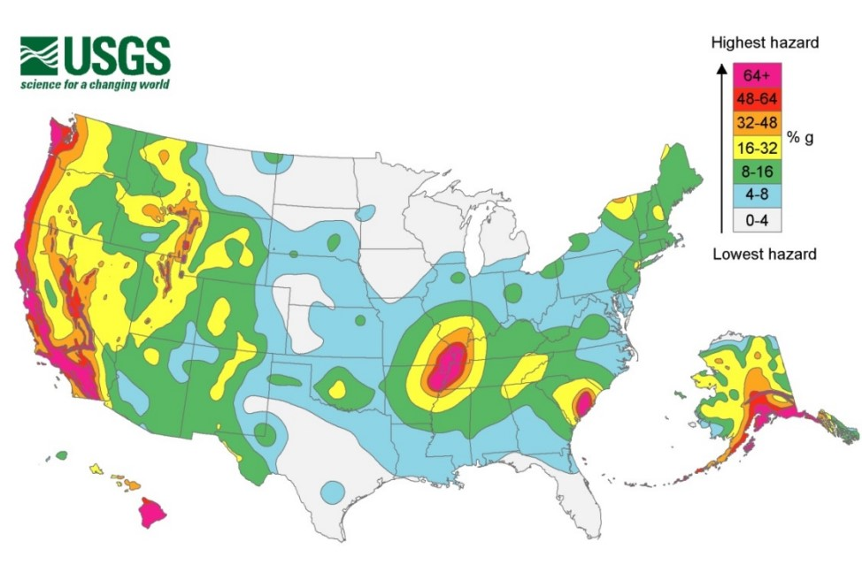
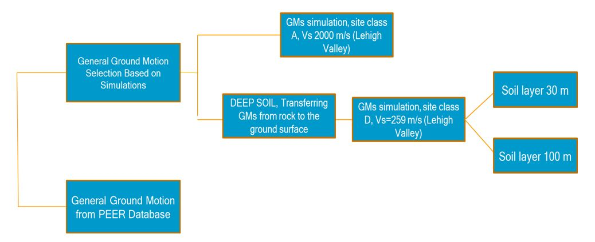
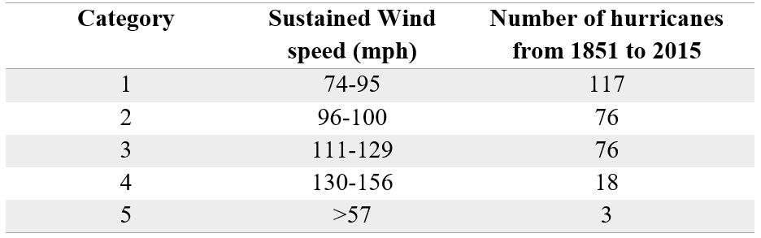
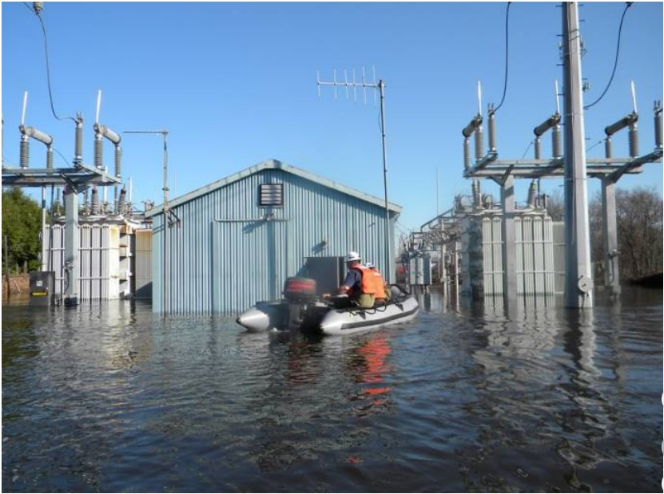

Probablistic Resilience Assessment of Electrical Substations
Hazards Analyses on Substations
There are different reasons for the power outages, however, a report by the US Department of energy cites weather related outages
as the leading cause followed by the aging infrastructure, earthquakes, floods and potential cyber-attacks (DOE, 2016). This section
will study three types of the natural hazard based on their potential for disrupting the power grid: Seismic, wind, and flood.
1. Siesmic Hazards
Earthquakes are amongst some of the most devastating natural hazards. Majority of US cities in the western US and some parts
of central and eastern US are vulnerable to earthquake hazard as shown in Figure 2 1 (USGS, 2016). In previous earthquakes,
components of transmission substations have suffered damages that have led to large disruption of power to communities.
The damages sustained by electrical substations from large earthquakes in California between the 1970s and mid-1990s provided
much of the motivation for the seismic design standard IEEE-693, 2005. Transmission substation components are more vulnerable
because of the need for larger clearance from ground (for electrical safety), large weights and the use of brittle porcelain
components for electrical insulation.

Figure 1 US Seismic hazard map (PGA, 2% in 50 years), USGS (2016)
Fragility curves in this study are developed using ground motions obtained from PEER database
(https://peer.berkeley.edu/peer-strong-ground-motion-databases) for general scenario fragility curves
, and simulated ground motions using CENA models for site specific fragility curves. The simulated ground
motions are transferred to the ground surface in site class A and site class D using DEEPSOIL software (Figure 2 6).
DEEPSOIL uses the soil column above bedrock and amplifies the ground motion to the ground surface (Hashash, 2019).
Figure 2 7 shows median values of ground motions amplified to the ground surface for a soil column with Vs=465m/s, H= 30m
and a soil column with Vs=465m/s, H= 80 m using the A04 model.

Figure 2 Ground motions generated for seismic fragility analysis of substation components
2. Hurricane Hazards
Circulating weather systems over the ocean waters, also called tropical cyclones, are divided into three categories:
tropical depression (maximum sustained winds ≤ 38 mph), tropical storm (maximum sustained winds of 39 to 73 mph) and
hurricanes (maximum sustained winds ≥ 74 mph) (NOAA, 2016). On average US coasts are hit by five hurricanes in a typical
3-year period, from which two are category 3 or above (NOAA, 2016). The Saffir-Simpson Hurricane Scale divides the hurricane
into five categories based on their 1- minute sustained wind speed, which is the measured wind speed at a height of 33 ft. for
10 minutes, and then taking the average. Table 2 3 shows the range of these five categories and the frequency of their occurrence
in the US between 1851 and 2015 (Jarrell et al., 2001)
Hurricanes are among the major causes of power outages in the US. Since 2002, 58% of power outages and 87% of outages
affecting 50, 000 or more customers were caused by hurricanes, thunderstorms and blizzards (DOE, 2016). Hurricanes have
less effect on power generation stations and transmission systems. The distribution systems, however, can be significantly
affected by hurricanes. Much of the damage to the distribution systems is caused by the high wind speed, storm surges, flying
debris and falling trees.
Table 1 Saffir-Simpson hurricane scale and summary of hurricanes that hit the U.S.

3. Wind Hazards
Wind hazards are among the major causes of power outages in the US. Winds rarely affect the power generation stations and cause
little damage to the transmission systems (transmission towers and cables) because of their design to withstand high wind loads
(FEMA-202, 1990). Most of the damages are caused to the distribution systems because of the high velocity winds damaging
distribution poles, lines, and falling trees. Wood poles support overhead lines, which are primary components of power
distribution systems, and are highly vulnerable to failure during strong winds. While the wind might not be hazardous
to the transmission substation, this research will perform parametric studies of wind and wind +ice for several substation
structures to determine their failure probabilities as a function of wind speed.
4. Flood Hazards
Flood water could inundate various systems within the substation (Figure 2 8) resulting in damage to
communication lines to operation centers, loss of battery, damage to high voltage equipment in switchyard, fires,
and short circuits (Boggess et al., 2014). Industry standard is to design switchyards and control houses to 100 year floods
height plus 1 ft., but this is possible for inland substation impacted by the rivers and waterway flooding.
Coastal substations are more vulnerable to storm surge, tidal cycles, and tsunamis. Having a reliable substation
against flood hazards is a matter of engineering management and planning with small to no relation to the strength
of the equipment in the substation. Previous researches have shown that for substations susceptible to storm surge
at high flood zones, the following mitigations can be employed.
